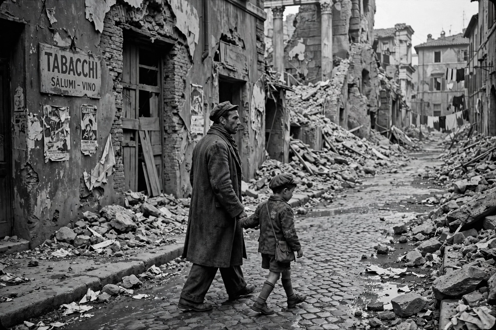

| Years active | c. 1944–1952 |
|---|---|
| Country | Italy |
| Key directors | Roberto Rossellini, Vittorio De Sica, Luchino Visconti, Giuseppe De Santis |
| Key films | Rome, Open City (1945); Shoeshine (1946); Bicycle Thieves (1948); La Terra Trema (1948); Umberto D. (1952) |

Italian neorealism (Italian: Neorealismo) was a film movement that emerged in Italy during and immediately after the Second World War. Characterised by stories of the poor and working class, location shooting, long takes, and the frequent use of non-professional actors, it portrayed the social and economic devastation of wartime and post-war Italy and became one of the most influential movements in cinema history.
Neorealist films were made in reaction both to fascist-era studio productions — the glossy "white telephone" films of Mussolini's Italy, many shot at Cinecittà — and to the material conditions of the post-war years, when damaged studios, scarce film stock and few resources pushed directors into the streets. Screenwriter Cesare Zavattini, the movement's great theorist, argued that cinema should attend to everyday life and ordinary people, following a man buying a pair of shoes with the same seriousness as a conventional plot.
As Italy's economy recovered in the 1950s and audiences turned to entertainment, neorealism waned at home, but its methods spread worldwide — influencing the French New Wave, Satyajit Ray's Indian cinema, the Brazilian Cinema Novo, and generations of independent filmmakers. Its ethic of filming ordinary life on location remains a touchstone, echoed in later realist movements and in the crime-story austerity of Nordic noir television.